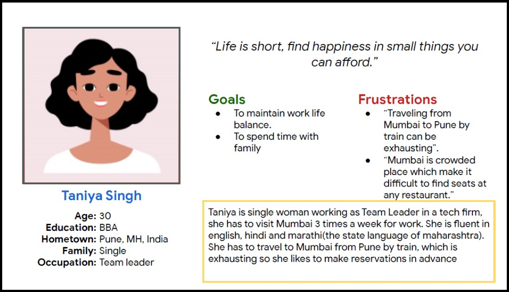

Mumbai Cafe is a cafe located in Mumbai. Mumbai Cafe strives to deliver coffee, speciality chai and healthy side dishes. Mumbai Cafe targets customers like students and workers who want to get a quick bite or host a party or a meeting.
March 2021-May 2021
uring peak hours it gets hard to find table at any cafe in the area, which can cause customers their precious time.
Design an app for Mumbai Cafe that allows users to easily reserve a table at the cafe.
UX designer designing an app for Mumbai Cafe from conception to delivery.
Conducting interviews, paper and digital wireframing, low and high-fidelity prototyping, conducting usability studies, accounting for accessibility, and iterating on designs.
I conducted interviews and created empathy maps to understand the users I’m
designing for and their needs. A primary user group identified through research
was working adults who have busy schedule.
This group was generally suffering from shortage of time. During the peak hours, it was difficult for them to find table at any cafe. Sometimes they had to leave due to cafe being packed.
Platform for booking table are not equipped with assistive technology
Working adults are too busy to spend time on finding table
Text-heavy menus in apps are often difficult to read and order from
Taniya is a busy working adult who needs easy way to reserve table at cafe because they have no time to waste on visiting cafe just to find no vacant table.
Mapping Taniya’s user journey revealed how helpful it would be for users to have access to a dedicated Mumbai Cafe app to reserve table.

Taking the time to draft iterations of each screen of the app on paer ensured that the elements that made it to digital wireframes would be well-suited to address user pain points. For the homescreen, I prioritized a quick and easy booking process to help users save time.

As the initial design phase continued, I made sure to base screen designs on feedback and findings from the user research.

Easy navigation was a key user need to address in the designs in addition to equipping the app to work with assistive technologies.

The low-fidelity prototype connected the primary user flow of building and ordering a pizza, so the prototype could be used in a usability study with users. View Mumbai Cafe's low-fidelity prototype.

Unmoderated usability study
India; remote
4 participants
20-25 minutes
1. People want better view of recent bookings.
2. Separate page for entering user information for booking.
There were a few actionable insights I came up with from the usability studies. One of these was adding separate pages for information within the app’s reservation process to help users.


The hi-fi prototype followed the same “reserve table” user flow as the lo-fi prototype, and included the design changes made after the usability study. View the Mumbai Cafe high-fidelity prototype.

Provided access to users who are vision impaired through adding alt text to images for screen readers.
Used icons to help make navigation easier.
The app makes users feel like Mumbai Cafe really thinks about how to meet their needs.
One quote from peer feedback:
“The app made it so easy to reserve table at the Mumbai Cafe, I would definitely use this app to secure my table at the cafe.”
While designing the Mumbai Cafe app, I learned that the first ideas for the app are only the beginning of the process. Usability studies and peer feedback influenced each iteration of the app’s designs.
Conduct another round of usability studies to validate whether the pain points users experienced have been effectively addressed.
Conduct more user research to determine any new areas of need.